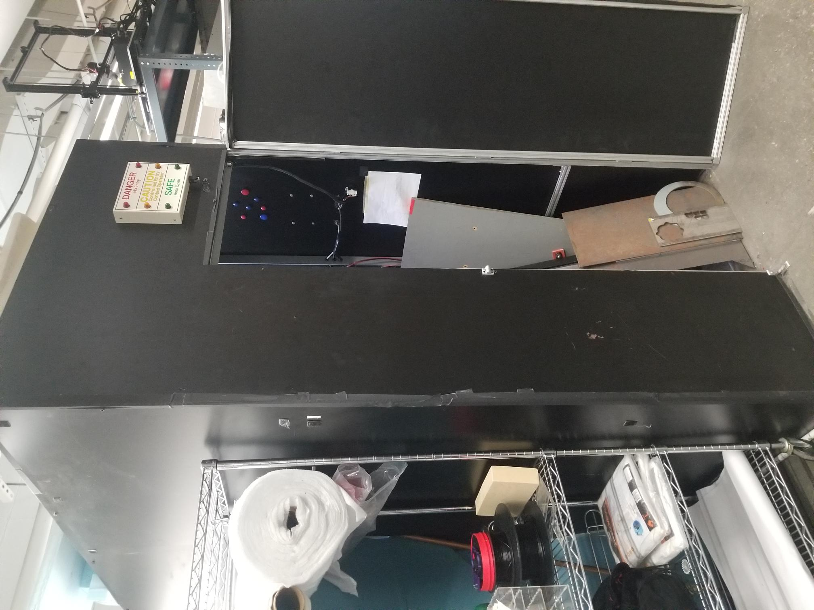
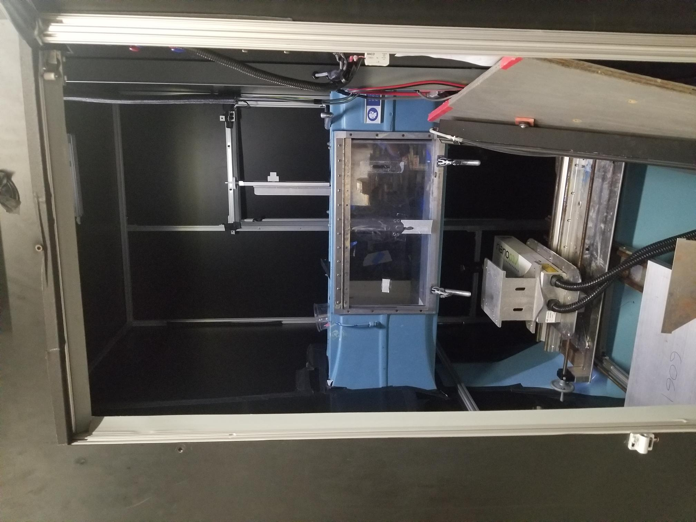

Howard Silfin (ME'49) Mechanical Engineering Internship Award: Air Tunnel Project
Objective
To create a portable, lightweight, and aesthetically appealing 1:1 replica of Cooper Union's air tunnel testing section. The existing enclosure of the air tunnel was too small for student experimentation and iteration, necessitating a detached solution that allows for multiple student collaboration. The replica focused on the test section, incorporating air sealing clamps on the plexiglass to replicate the functionality of the original model. Cost-effectiveness was also a crucial consideration throughout the project.
This is how cramped it was and why a detachable option was necessary:


Process
- Research & Analysis: Research on air tunnel manufacturing was conducted to gauge what pre-existing solutions existed. With the limited scale of machining, it was determined that the best approach, was the selection of aluminium t-slots due to their lightweight, rigid structure.Their versatility allows for various attachments and designs.
- Measurement & Design: Thorough measurements were taken using tape measures and vernier calipers, followed by CAD design using Onshape to create an accurate replica to understand where all the mounting holes were, as well as the dimensions of the materials that would be sourced.
- Material Selection: A careful analysis comparing acrylic glass and polycarbonate thermoplastic was carried out, culminating in the choice of acrylic glass for its advantages of transparency and availability.
- Construction & Assembly: The plexiglass holes and steel plates were laser cut and CNC milled, either by technicians or using AACE lab machines. The components were then assembled, ensuring adherence to the design specifications.
Skills Learned
The project involved learning and honing various soft and hard skills, including:
- Project Management: Leading a complex project single-handedly required strong organizational and decision-making abilities.
- Technical Skills: Proficiency in CAD software (Onshape) and laser cutting interface (Rhino) was developed.Bringing a design to life with skills learnt from classes.
- Material Analysis: Engineering judgement in material comparison and selection were essential.
- Initiative and Adaptability: The project demanded a proactive approach and flexibility to overcome challenges and meet the timeline.For example, there were multiple times when improvisation of washers or using screws I had at home was necessary.
- Communication: A critical aspect of the project's success was ongoing communication with the client.
- Progress Updates: Transparent sharing of milestones, challenges, and solutions.
- Funding Assurance: Ensuring financial support for materials and sponsorship opportunities.
- Alignment with Goals: Verifying project alignment with strategic objectives, and explicitly addressing client goals and expectations.
- Risk Management: Identifying and addressing potential risks promptly while they were still controllable.
- Collaborative Problem-Solving: Brainstorming and developing solutions together to ensure client satisfaction.
- Building Trust: Establishing a strong relationship of trust and confidence with the client.